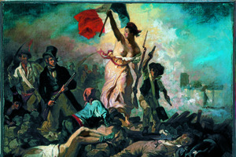
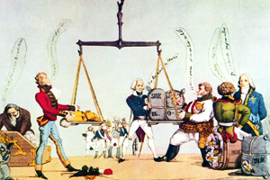

Lezione 16  L'Unità d'Italia
L'Unità d'Italia

-
279
210
-
290
340
-
290
370
-
329
312
-

PARIGI
Il grande pittore romantico francese Eugene Delacroix dipinge il celebre quadro La libertà guida il popolo nel 1830, dopo una serie di studi e di bozzetti come quello che vediamo. Il dipinto tuttavia viene ritenuto troppo audace e viene esposto soltanto dopo le rivoluzioni del 1848.

VIENNA
Le complesse manovre politiche e diplomatiche del Congresso di Vienna vengono irrise da questa incisione satirica francese intitolata L'equilibrio politico.VIENNA
Nel 1815 il Congresso di Vienna apre la fase storica della Restaurazione. Dopo la rivoluzione francese e le guerre napoleoniche le potenze vincitrici ripristinano gli antichi confini e i poteri dinastici. Nel corso dell'Ottocento questi confini sono destinati a notevoli cambiamenti.ITALIA
Nel 1815 l'Italia è suddivisa in una decina di stati, di cui molti non sono indipendenti. In realtà da oltre tre secoli gli stati italiani erano sottoposti a potenze straniere quali la Francia, la Spagna, l'Austria.